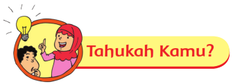
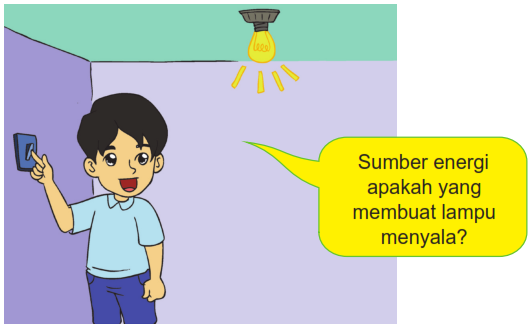
Salah satu sumber energi yang ada banyak digunakan di sekitar kita adalah listrik.
Ayo kita cari tahu bagaimana manfaat listrik bagi kehidupan kita.
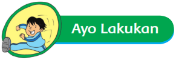
Perhatikan lampu yang ada di kelasmu!
Apa yang terjadi saat sakelar lampu yang belum menyala ditekan?
Tuliskan pendapatmu pada kolom di bawah ini!
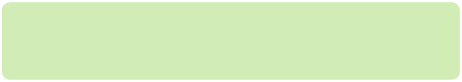
Saat sakelar lampu ditekan, energi listrik mengalir ke lampu sehingga arus listrik
berubah menjadi cahaya dan panas.
Dari peristiwa tersebut terjadi perubahan bentuk energi. Energi listrik berubah menjadi
energi cahaya dan panas.
Nah sekarang, temukanlah sebanyak-banyaknya benda yang sumber energinya adalah
listrik.
Amati perubahan energi yang terjadi dan tuliskan manfaatnya!
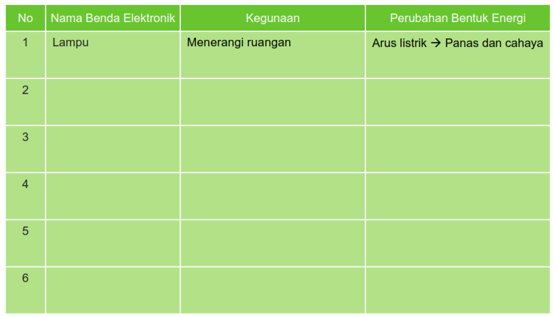
Setelah kamu mengamati benda-benda tersebut, jawablah pertanyaan berikut!
Pada pengamatan yang kamu lakukan, apakah perubahan energi yang terjadi
membawa manfaat? Jelaskan!
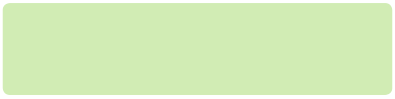
Sekarang, tukarlah jawabanmu dengan teman sebelahmu. Kalian boleh saling memberi
masukan.
Energi listrik adalah energi yang paling banyak digunakan di rumah. Setiap rumah
yang menggunakan energi listrik, harus mengeluarkan biaya untuk membayar daya
listrik yang digunakan.
Nah, sekarang bagaimana menghitung banyaknya daya listrik yang digunakan di
rumah?
Sebuah ruang tamu terdiri atas 3 lampu. Dua lampu berukuran 15 watt dan 1 lampu
berukuran 40 watt. Berapa watt daya yang digunakan pada ruang itu?
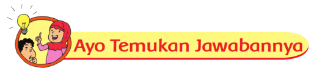
Jika tiga lampu itu digunakan selama 24 jam, berapa killo watt jam (kWh) total daya
yang digunakan ketiga lampu tersebut? (1 kWh = 1.000 wattjam)
Untuk mengetahui jumlah besarnya daya listrik yang digunakan, kita perlu mengetahui
strategi menghitung pada operasi penjumlahan, pengurangan, dan perkalian.
Yuk kita berlatih!
1. Perhatikan kalimat matematika berikut:
a. 2 x 3 + 1 = 7 dan 2 x 3 + 1 ≠ 8
b. 4 x 7 + 2 = 30 dan 4 x 7 + 2 ≠ 36
c. 2 + 5 x 4 = 22 dan 2 + 5 x 4 ≠ 28
d. 8 x 1 + 7 = 15 dan 8 x 1 + 7 ≠ 64
e. 4 + 5 x 3 = 19 dan 4 + 5 x 3 ≠ 27
Manakah yang harus dikerjakan terlebih dahulu? Penjumlahan atau perkalian?
Tuliskan aturannya!
2. Selesaikan kalimat matematika berikut dengan jawaban yang benar!
a. 2 x 4 + 5 =
b. 4 x 5 + 3 =
c 2 + 5 x 6 =
d 3 x 7 + 4 =
e 2 + 5 x 8 =
3. Perhatikan kalimat matematika berikut:
a. 2 x 3 - 1 = 5 dan 2 x 3 - 1 ≠ 4
b. 10 - 2 x 4 = 2 dan 10 - 2 x 4 ≠ 32
c. 4 x 5 - 5 = 15 dan 4 x 5 - 5 ≠ 28
d. 10 - 3 x 2 = 4 dan 10 - 3 x 2 ≠ 14
e. 3 x 6 - 5 = 13 dan 3 x 6 - 5 ≠ 3
Manakah yang harus dikerjakan terlebih dahulu? Pengurangan atau perkalian?
Tuliskan aturannya!
4. Selesaikan kalimat matematika berikut dengan jawaban yang benar!
a. 2 x 4 - 5 =
b. 4 x 5 - 3 =
c. 6 x 2 - 5 =
d. 3 x 7 - 4 =
e. 8 x 2 - 5 =
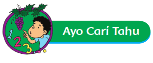
Beni dan teman-teman ingin berbagi informasi tentang kegunaan benda-benda
elektronik yang biasa digunakan dalam kehidupan sehari-hari. Bantulah Beni
membuat buklet yang bisa dimanfaatkan oleh teman-temannya.
Apa yang kamu ketahui tentang buklet? Yuk kita cari jawabannya!
Amati gambar berikut dan jawab pertanyaan bersama teman dalam kelompokmu!
1. Apa isi buklet tersebut?
2. Bagaimana kalimat dan gaya bahasa yang digunakan?
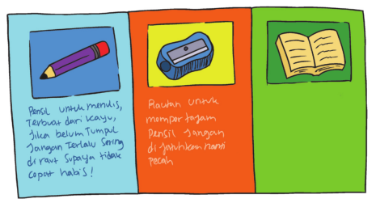
3. Bagaimana gambar buklet tersebut?
4. Apa manfaat buklet?
Yuk, kita bantu Beni untuk membuat buklet. Ikuti langkah-langkah di bawah ini:
1. Ambillah selembar kertas.
2. Lipatlah menjadi tiga bagian.
3. Pilih tiga benda elektronik yang akan kamu cantumkan.
4. Gambar satu benda elektronik di setiap kolom, seperti pada contoh tadi.
5. Lengkapilah bukletmu dengan informasi berikut:
a. Manfaat benda.
b. Sumber energi yang digunakan dan perubahan bentuk energi yang terjadi saat
benda bekerja.
c. Cara aman menggunakan benda tersebut.
d. Pemeliharaan benda tersebut sehingga akan tahan lama.
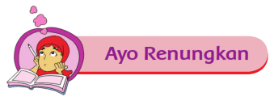
1. Apa saja yang telah kalian pelajari hari ini?
2. Apakah hal-hal tersebut berguna dalam kehidupan sehari-hari?
3. Bagaimana perasaanmu selama belajar?
4. Adakah hal lain yang ingin kalian ketahui? Sebutkan!
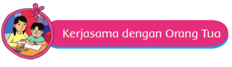
Lakukan pengamatan benda-benda elektronik yang ada di rumahmu.
1. Tuliskan kegunaan benda-benda tersebut.
2. Tuliskan perubahan bentuk energi yang terjadi saat benda bekerja.
3. Hitung total daya yang digunakan benda-benda elektronik tersebut dalam satu
hari.